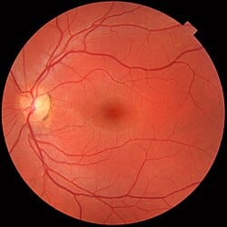
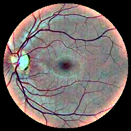
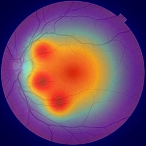
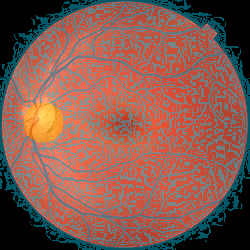

Screening ID: a7f9c087-8dfe-4399-bab9-ead21fbf08d0 | Date: 2026-09-05 01:48
Patient ID: PATIENT_1042
Eye: OD
Referable DR: No (Routine)
Clinical Urgency: Semi-Annual Monitoring (6-9 months)
Image Quality: Gradable (Optimal for AI) (91.1/100)
Dominant Focus: Macula Fovea
Original Fundus

Ben Graham CLAHE

Grad-CAM Saliency

Vessels & Optic Disc
